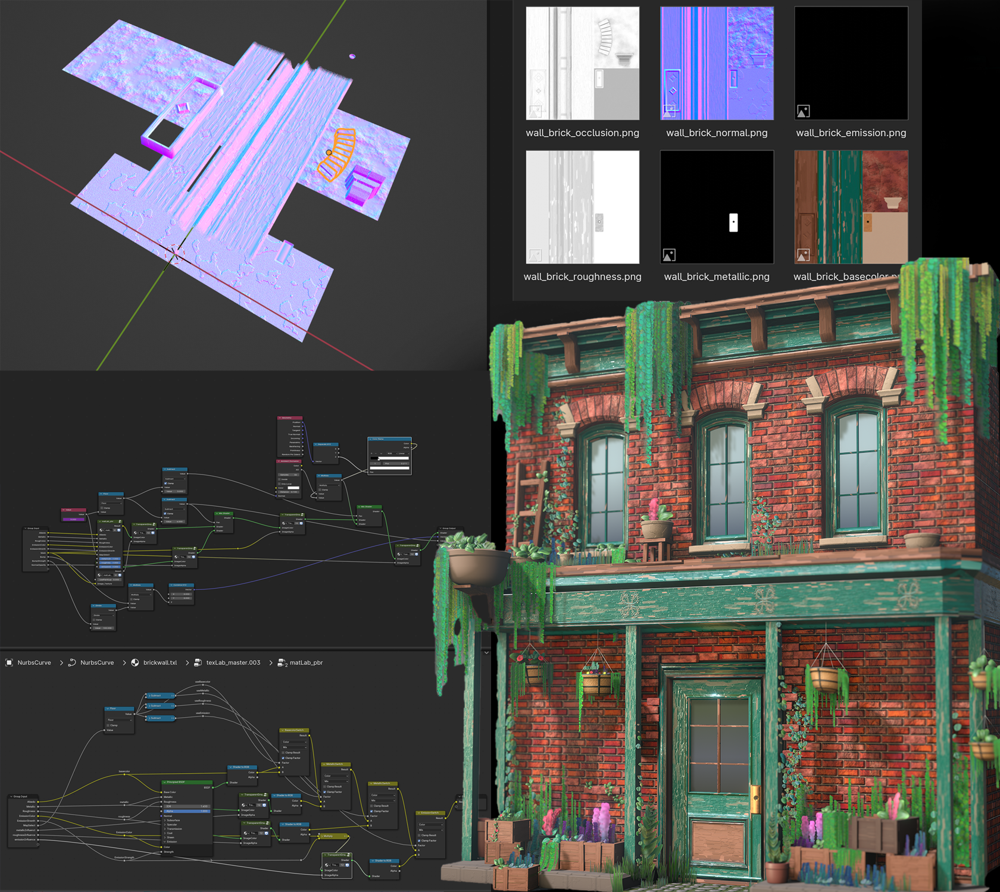

Blender material authoring · In development
Aether
A Blender workspace for texturing objects and creating seamless materials from procedural geometry and shaders.
I use Aether to build surface detail in an editable texture-space scene, using modeling, Geometry Nodes and materials. That scene can represent an object’s UV layout or a seamless tile; both lead to texture maps that I can inspect on a 3D receiver and use in a game engine.
The authoring model
Texture space as an editable scene
Aether gives me a scene to work on the surface of an object or a repeatable material. The authoring canvas is a representation of texture space: for an object, it is built from the target’s UV layout; for a seamless material, it is a tile. An orthographic camera captures what I build on that canvas into the individual maps.
The canvas is still a working Blender scene. I can construct surface features with real geometry, use Geometry Nodes to generate or place them, and use procedural materials for color and detail. Geometry can carry forms such as seams, bevels, screws or scattered elements; shaders add fine scratches, grain, wear and color variation. Their relationships stay editable while I work.
Aether routes the construction through shared material outputs and captures a coherent set of base color, tangent-space normal, roughness, metallic, AO, opacity and height maps. Geometry and shader bump can contribute to height and normal. The result can be applied back to the object or used as a repeating surface.
Object texturing
A live UV representation of the object
For an object, I choose a target mesh and UV layer. Aether uses Geometry Nodes to read the target’s evaluated geometry and create the UV-space authoring canvas, alongside a separate 3D preview of the object. Changes to the source geometry, UVs or modifiers can flow into the authoring scene, so I can keep working on the model and its surface together.
The canvas preserves the original surface’s position, normal and material-slot index as live data. Shader and Geometry Nodes tools can use those fields to place or drive detail with knowledge of the original shape, even though I’m working in its flattened UV layout. I can also bake source maps such as AO, curvature, position and normal to guide masks, wear and projection where I need those inputs.
That gives me room to build surface detail as geometry in texture space—for example a screw, seam or recessed feature—and capture its appearance into the object’s maps. I review the result on the 3D receiver, especially around UV seams. The original object retains the silhouette; the captured maps carry the authored surface detail.
Seamless materials
A tile built from geometry
For a seamless material, the canvas is a repeating tile. I can build boards with thickness and worn edges, individual bricks above recessed mortar, or blades and stones scattered over a ground layer. The pieces can overlap, cast occlusion and have their own materials. The same camera and map outputs capture the construction into a surface that can repeat across a larger area.
The two workflows share the same idea: use Blender’s geometry, procedural tools and materials to author the surface, inspect it on a receiver, then export the maps. The difference is whether the canvas follows a particular object’s UVs or describes a repeatable tile.
Procedural geometry
Geometry Nodes as a texture tool
Geometry Nodes is a big part of why I wanted this workflow. A node graph can create and control actual surface elements: scatter grass or stones on a tile, or sample the target object’s surface through its UVs to guide generated detail on an asset. I can vary parameters or a seed, rebuild the geometry, and capture the result into a complete texture set.
For seamless surfaces, the order matters. Aether evaluates the seeded construction first and repeats that result into neighboring tiles. An element crossing one edge therefore continues on the opposite edge with the same placement and shape, rather than being generated again with a different random result. The repeat group can keep copies instanced while editing. A stored source-position attribute also gives shaders a way to keep their procedural detail consistent across those copies.
For a tile, the collection-scatter tool exposes density, seed, scale, rotation and tilt on the modifier. It is one useful starting point, not a limit on the graphs I can build. I can use my own Geometry Nodes setups, modifiers and materials in either authoring scene; repeating generated geometry is specific to the seamless workflow.
Capture and review
From construction to maps
The authoring view looks through the capture camera, while a separate 3D receiver shows the material on a surface. I can inspect a single map, render a faster preview, and then export the full set. Layer controls choose which geometry participates in each map and whether it casts AO; those are separate decisions.
Height is captured along the camera axis and its range is recorded in metres. Presets can produce separate or packed maps from the captures, including the maps Plush reads. The detailed Blender construction stays available for revision, while the engine can use the resulting textures on simple geometry.
Blender interface
The working interface
These are real captures of the Aether 1.0.24 development workspace in Blender 5.2.3, captured in November 2026. Open an image to inspect the controls.


Source Map Baking has its own panel for choosing a target, UV map, output folder, and optional high-resolution source. The Shader and Geometry Nodes editors also expose source maps, live surface data and material tools.
Recent work · Rendered in Plush
Materials and props
The gallery brings together the results of the current authoring workflow, including material variations, wall plates, and an interactive comparison of flat shading, parallax occlusion mapping, and near-field surfels.
Explore the gallery →


Background
Where it started
I started Aether in 2025. It now brings together two workflows I had been building separately. xBake focused on getting mesh information into usable texture maps: source and target setup, baking, and organizing output. TextureLab explored making materials in a texture-space scene, using Blender’s nodes and geometry to build the surface itself.
Aether carries both ideas forward. I can bake position, normal, curvature, AO and material IDs from a source mesh, use those inputs while authoring, then capture the result into a consistent map set. It has grown into a broader workflow for seamless materials and object surfaces.



Development workflow
Working with an assistant through MCP
Once the human editing workflow exists, MCP gives an assistant a way to work in the same Blender session. I use a separate development extension, Devkit, and a local MCP server. The server discovers an authenticated session and passes requests to Blender’s main thread; Blender still owns the file, scene, UI, evaluation and renders.
What makes this useful is giving the assistant enough context and a small set of reusable actions rather than a separate tool for every material operation. The bridge can inspect the active file, selection, objects, modifiers and editors; call a named Blender or Aether operator; run Python in a visible Text Editor block; capture the UI; and reload an extension. The same actions work across many tasks, and full Blender Python is still available when a named operator is not enough.
The API reference comes from the code, much like Plush’s. In Aether, each operator has a Python docstring describing what it does, the required context, effects and limits; Blender property declarations carry descriptions, defaults and ranges. The generator parses the registered source modules and produces Markdown and JSON without running the add-on. Plush uses Python docstrings for its authoring API and XML documentation comments for its C# API. The MCP API lookup searches a fresh extraction of Aether’s source, so the assistant can find an existing operation and its requirements before acting. A separate knowledge lookup supplies the authoring conventions and current feature status. The public web reference is a generated snapshot: I refresh its API data and rebuild the site when the source changes. Freshness checks catch stale output and missing descriptions, though they cannot prove the descriptions are correct.
In practice that supports a loop I can see and direct: inspect the open scene, find the relevant API, change geometry or a node graph, render and inspect the result, and revise. The bridge reports errors and keeps the connection through extension reloads; Blender Undo applies to supported data edits, while files written to disk are separate. This is my personal development setup. Aether’s ordinary authoring and export work in stock Blender without it.
Browse the source-derived API →Current work
From capture to engine
The regular PBR workflow and packed exports are in use. I’m also testing near-field relief: Aether captures depth slices and compiles surface samples for Plush to draw as surfels near the camera, with POM on the host surface farther away. That path is experimental; the gallery shows the current result and the data behind it.
I’m continuing to develop the object-surface tools, region metadata for trims and decals, and live camera preview. The renderer-specific preview is optional; it doesn’t replace the file-backed export.